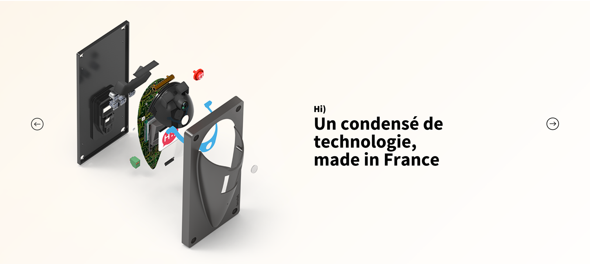
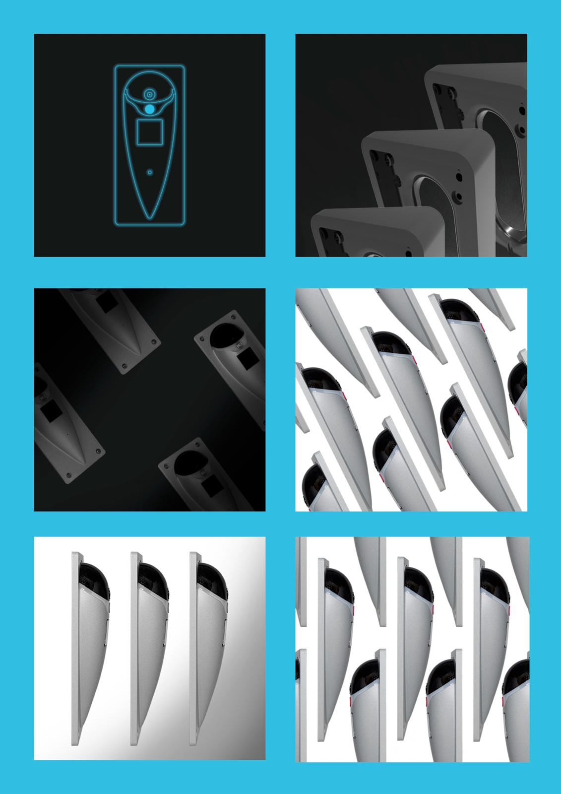
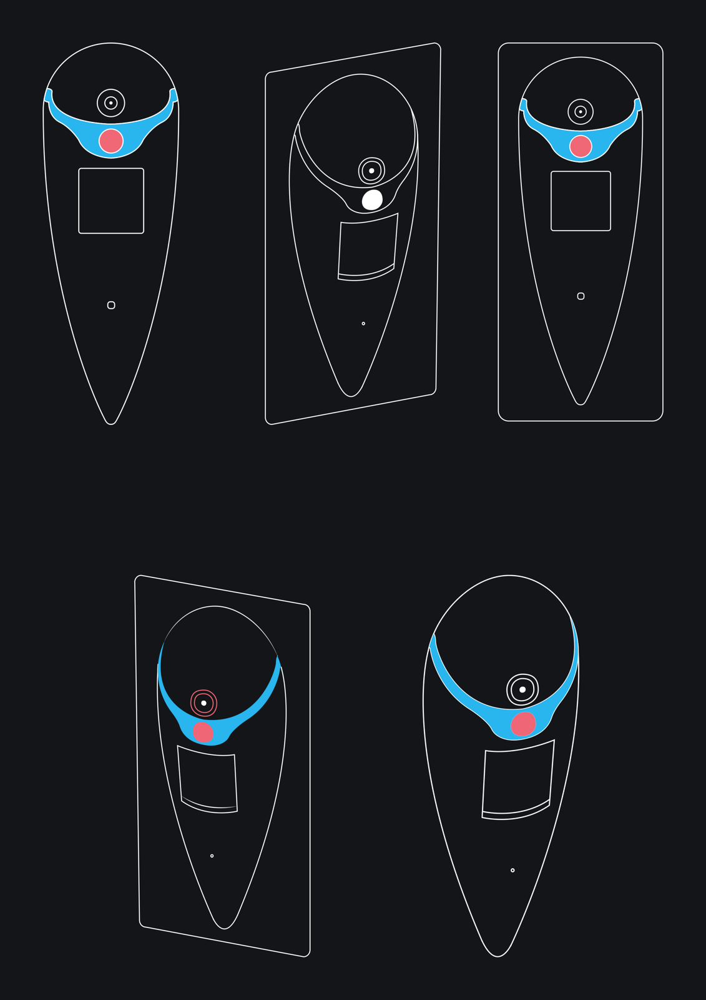
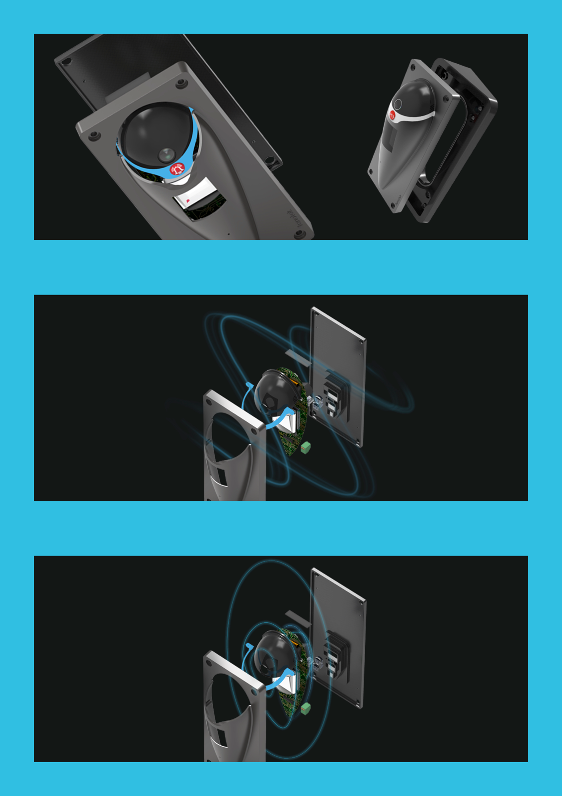
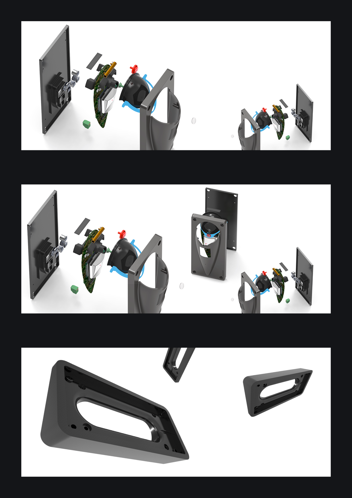
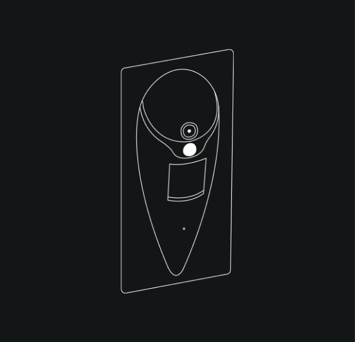
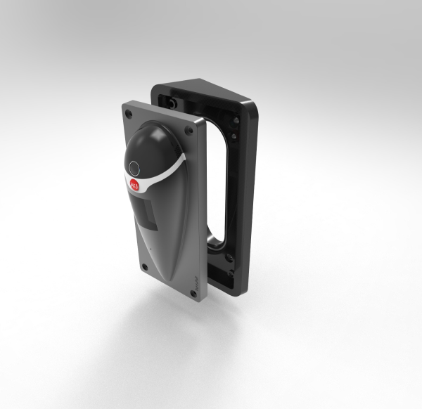

Refonte du site web et de l'identité de marque de Fenotek, dont les caméras se distinguent par leur simplicité d'usage et leur complexité technologique. Mission menée à distance avec le chef de projet.
Direction artistique, production de contenu visuel (suite Adobe). Un terrain d'expression créative où consolider des compétences techniques.






